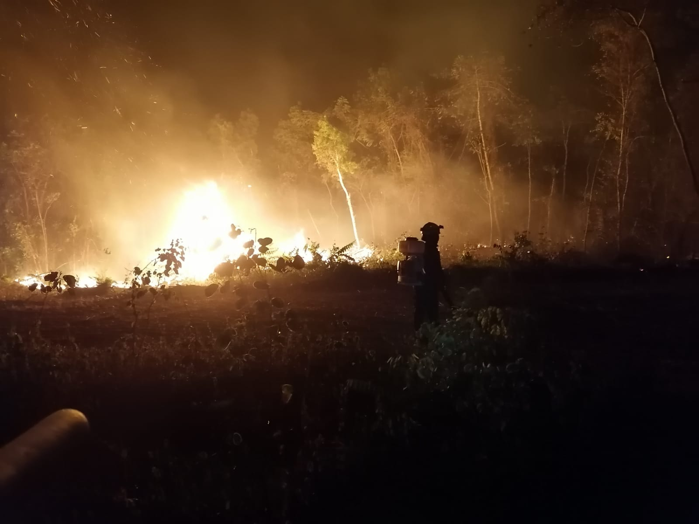
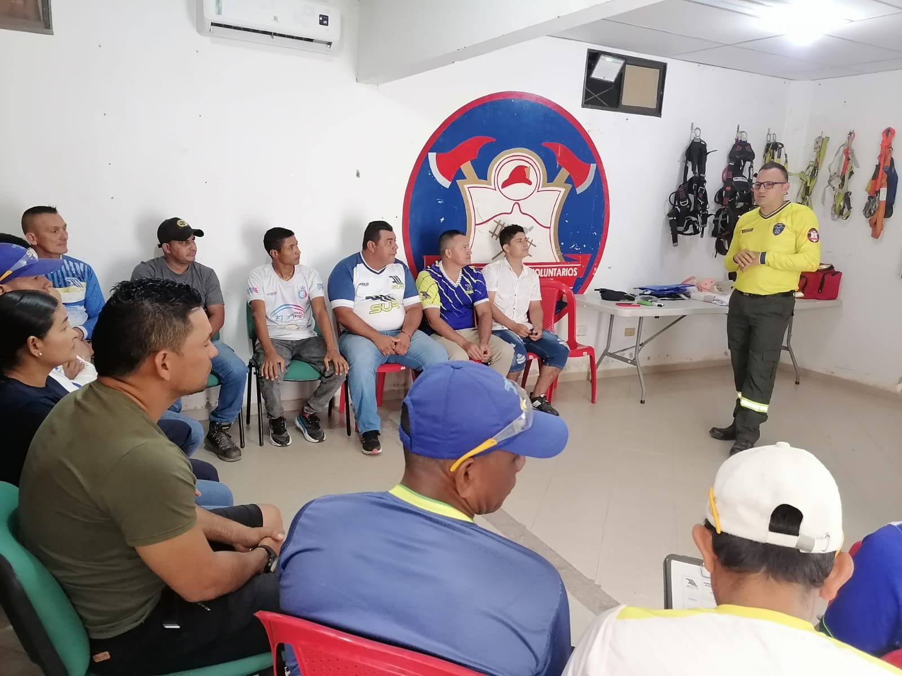
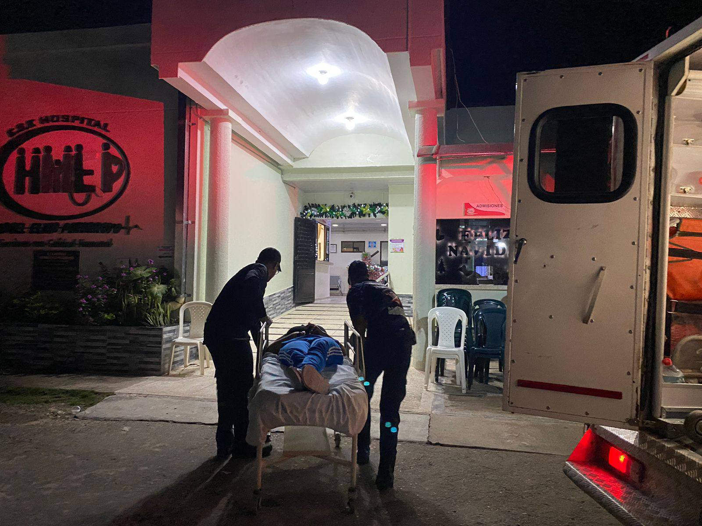
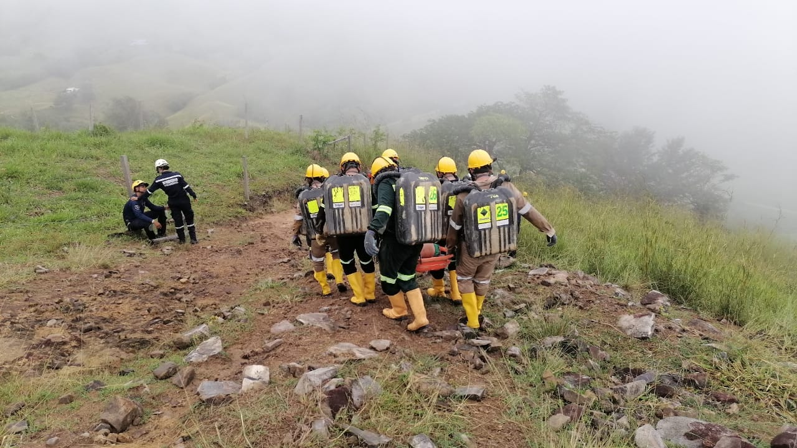
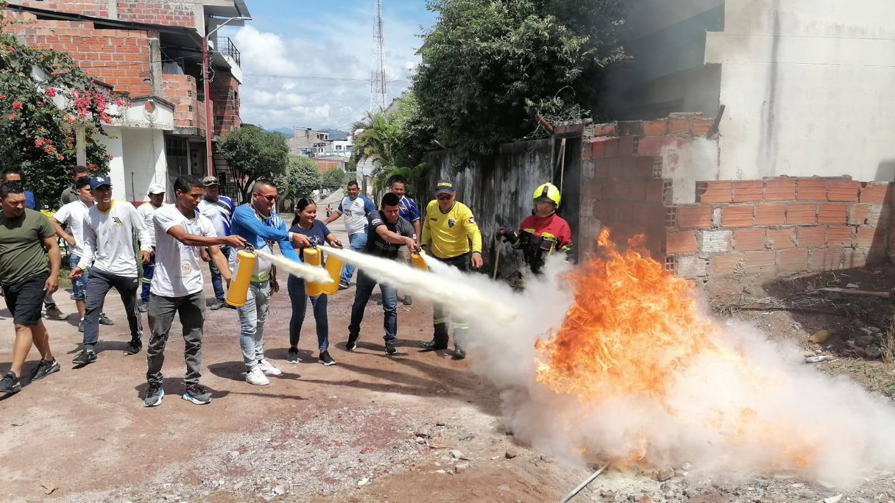
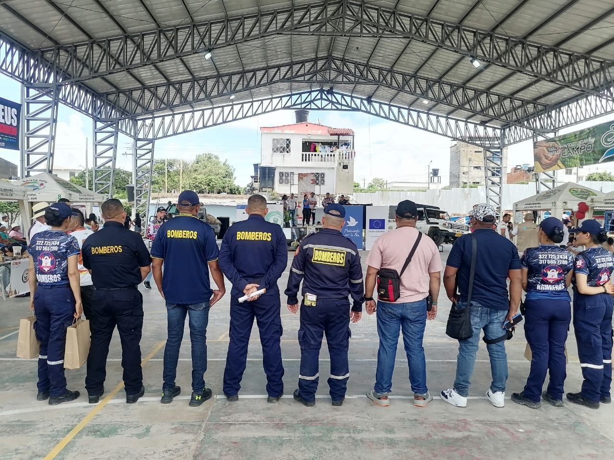
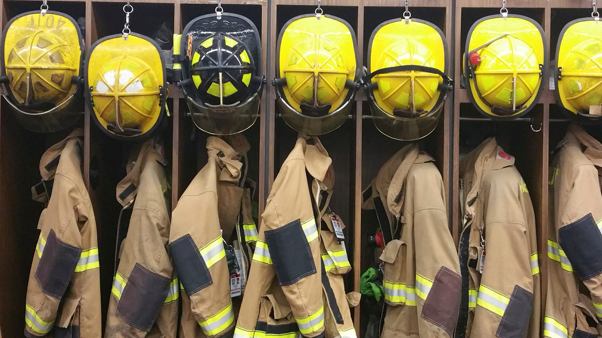

¿Qué hacen los bomberos?
Los bomberos son servidores públicos altamente capacitados y comprometidos con la protección de la vida, los bienes y el medio ambiente. Su labor abarca mucho más que apagar incendios: participan en operaciones de rescate, atención de emergencias médicas, manejo de materiales peligrosos, educación comunitaria, prevención de riesgos, y apoyo en catástrofes naturales, entre muchas otras funciones.
Extinción de incendios
- Respuesta rápida ante alarmas.
- Evaluación del fuego y riesgos.
- Uso de técnicas y equipos adecuados.
- Rescate de personas y animales.

Emergencias no relacionadas con fuego
- Accidentes de tránsito.
- Derrumbes y colapsos.
- Inundaciones y rescates.
- Explosiones, fugas y desastres naturales.

Prevención y gestión del riesgo
- Inspección de edificios y sistemas.
- Supervisión de eventos masivos.
- Capacitación a empresas y comunidades.
- Campañas de prevención.

Atención prehospitalaria
- Evaluación de pacientes.
- Primeros auxilios y RCP.
- Uso de equipos médicos portátiles.
- Traslado seguro al hospital.

Rescates especializados
- Alturas y estructuras inestables.
- Espacios confinados.
- Rescates acuáticos.
- Operaciones en montaña.

Rescate y protección de animales
- Rescate de mascotas atrapadas.
- Manejo de animales peligrosos.
- Colaboración con autoridades ambientales.

Formación y simulacros
- Entrenamientos constantes.
- Uso de nuevas tecnologías.
- Simulacros con otras entidades.
- Charlas educativas en la comunidad.

Mantenimiento de equipos
- Revisión diaria de herramientas.
- Mantenimiento de vehículos.
- Inventario y registros de uso.

Apoyo a la comunidad
- Entrega de ayudas humanitarias.
- Apoyo emocional a víctimas.
- Campañas de salud y medioambiente.
- Visitas educativas a escuelas.

Perfil del bombero
- Buen estado físico y resistencia.
- Dominio en rescate y primeros auxilios.
- Calma y decisión en emergencias.
- Vocación de servicio y disciplina.
